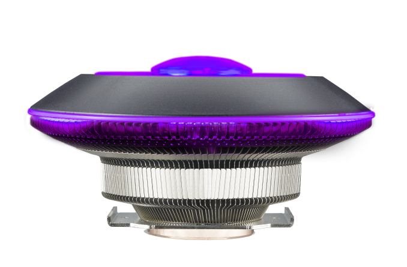

CPU koeler kiezen
Kenmerken
Van een CPU koeler is het best logisch wat het is, het koelt de CPU.
Het bestaat uit een stuk metaal dat de warmte uit de CPU opneemt en een fan die de warmte weg blaast. Soms krijg je een CPU koeler bij je processor, dan kun je deze stap overslaan.

Filters
Bij CPU koelers moet je alleen maar kijken naar wat voor bevestiging die heeft, deze moet hetzelfde zijn als bij het moederbord. Verder kan je nog allerlei andere filters instellen; de kleur, RGB, en nog veel meer. Bij een CPU koeler zijn er veel verschillende opties. Kijk ook nog of er koelpasta is geleverd bij je koeler, zo niet, moet je dit kopen.
Merken
De beste merken voor CPU koelers zijn: be quite! en Cooler Master, maar het is niet erg om er een te nemen die niet van dit merk is. Ze zijn bijna allemaal even goed en koelen even goed.
Dit was Stap 6 van Deel 1, je kunt nu doorgaan naar de volgende stap.